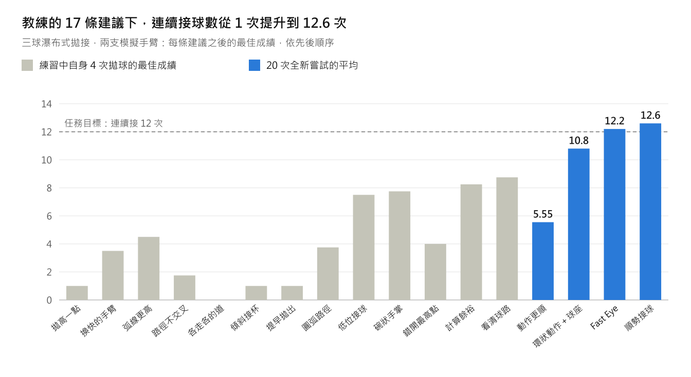

分揀站
教機器人把混雜的物品分到不同的箱子裡，接著更改規則、加入易碎物品，並給它處理方式的建議。規劃中；視覺測試已經開始。
示範 · 皆在模擬環境中完成
本頁所有成果皆在模擬環境（MuJoCo）中完成。在真實機器人上驗證，是我們最想與設計夥伴一起完成的第一件事。
Kith 只收到一句指令：用瀑布式拋接三顆球，連續接住十二次。
這項測試中的人類教練其實不會拋接雜耍。教練的建議都是關於如何動作的平實話語，例如「拋高一點，爭取時間」和「接球不要反彈」。Kith 把每一條建議轉成技能上的一項改變，並捨棄沒有幫助的建議。當練習卡關時，它會自行找出原因：它的手花太多時間在預備動作上，來不及接球。於是它改變了動作本身，讓每一次接球順勢流入下一次拋球。它的拋球變得精準，接球變得輕柔：每一顆球都被輕輕接住，不會反彈。
重點是：只要知道「好」是什麼樣子的人，就能用平實的話教 Kith 一項實體技能，不需要自己會做，也不需要寫任何程式碼。

每個元件都以自己擅長的速度運作，因此較慢的 AI 模型從不拖累快速的動作。
| 元件 | 功能 | 頻率 |
|---|---|---|
| 技能程式 | Kith 以人可閱讀的文字（而非神經網路）產生並儲存學會的技能 | 只寫一次；卡關時修訂 |
| Fast Eye | 一個 7 層的卷積神經網路（CNN）在兩台 125 fps 攝影機的畫面中找出每一顆球：在筆電 GPU 上每張影像 3.15 毫秒，誤差中位數 0.17 像素。它以模擬器自動標註的影像訓練而成。追蹤器依重力擬合每顆球的飛行軌跡，並預測它落下的位置與時間 | 每 4 毫秒 |
| Kith | 手部指令：位置、速度、加速度 | 每 2 毫秒 |
| Skill Tuner | 貝氏最佳化，結合高斯過程與信賴域中的湯普森抽樣。它學習物理模型遺漏的部分，並測量每一次失誤：偏差多少、偏向哪個方向。技能只有在全新的嘗試中達標才算學會 | 每一輪練習 |
| Thinker（思考器） | 練習卡關時，它會運用時間與速度預算找出原因，然後改變動作的形態，或向教練請教 | 總共 47 次 |
| 機器人控制器 | 在自身的限制與安全範圍內驅動各關節 | 約每 1 毫秒 |
它記住了什麼，又延續了什麼。Kith 會保留它學到的東西：技能本身、為每台機器人調校好的參數、每支手臂實際如何運動的模型，以及一般性的經驗，其中有些來自教練，有些是它自己歸納出來的。當 Kith 重新學習這項技能時，它起步就領先；另一支手臂學習新的輕柔接球，也比沒有這些知識時快得多。Kith 也知道機器人做不到什麼：對於其中一支手臂，它用數據證明這支手臂拋得不夠快，而不是白白練習。

在第二項測試中，Kith 閱讀了一張四格圖解，內容是如何打一個「活結式收束結」（slipped constrictor knot），並將它轉成精確的步驟。遇到從圖上無法判斷的地方，它會詢問專家，並把答案保存為經驗紀錄；這條經驗要在新的圖片上也成立，才會被採信。
圖中是依照 Kith 的步驟、在模擬環境中打好的繩結。繩子是由模擬器的捷徑移動，而不是機器手，因此這項測試著重的是閱讀、發問與檢查。
教機器人把混雜的物品分到不同的箱子裡，接著更改規則、加入易碎物品，並給它處理方式的建議。規劃中；視覺測試已經開始。
移動機器人建立場域地圖、盤點物品、察覺變化，並依口語指示前往目的地。教它在一個場域中什麼重要、該回報什麼。已在模擬住家中運作。